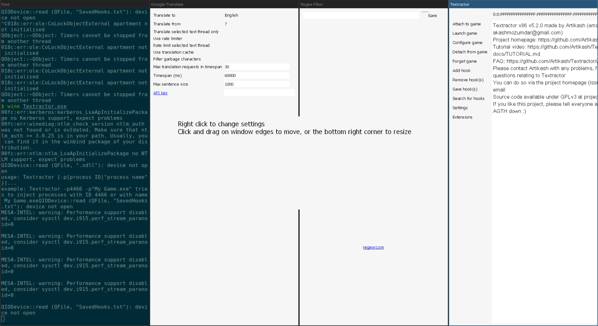
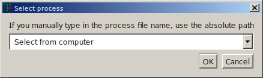
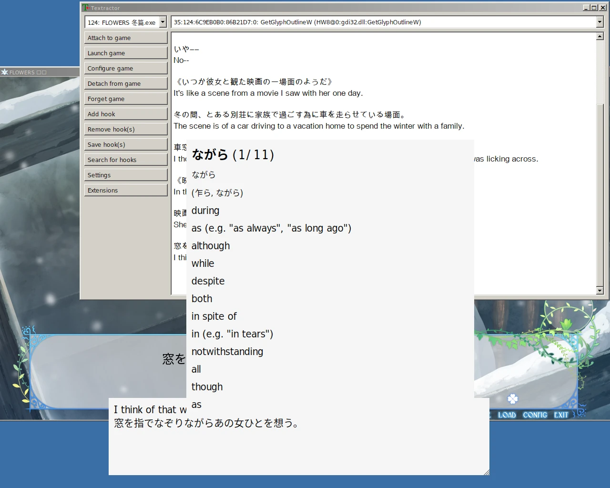

在虛空中與 amitié 相遇。下篇
FLOWERS 三重唱 - 名塚佳織, 岡本理絵, 明島ゆうり on Soundcloud
你在讀到本文時 FLOWERS 冬篇的官方漢化版可能已經出了，但 noarch 在 2022 年初就啃完冬篇生肉了。完全不會日語的 noarch 是怎麼做到的呢...
很抱歉這篇文章從年初一直咕到現在才寫完，希望下面的操作能為你看其它生肉 gal 提供一些參考。
Textractor 簡介
這次探索生肉 gal 自動翻譯的旅程著實讓 noarch 敬佩阿宅們為了能玩上游戲做出的努力。
noarch 在中文圈搜了一圈，發現教程最多的是“Visual Novel Reader”，而進一步調查 noarch 發現這個軟體處於一個被社群瘋狂魔改的狀態，原開發者疑似已經跑路了。
看到這，noarch 想著，總有比這更優雅的解決方案吧；於是我在 GitHub 找到了 Textractor。它設計看起來明顯比上述的 VNR 看起來簡單，並且是 GPL 協議的自由軟體。
從使用者角度來看，Textractor 做的事情非常簡單：從遊戲內提取文字，將文字送入外掛管線做翻譯等處理，並將處理後的文字輸出。
下面我們開始吧。別被嚇到，本文簡短的長度就是 Textractor 易用性的最好證明。
安裝
Textractor 釋出在 GitHub 上，能開始讀本文的你應該也熟悉反直覺的 GitHub 下載二進位制 Releases 的方法了。
Textractor 作者在 Releases 裡提供了兩種安裝方式，exe 和 zip，而其實 exe 安裝器做的只是將 Textractor 解壓到目標位置然後安裝作者改的 Arial Unicode MS 字型。
如果你選擇 exe，請注意選擇 "Install for all users" 即“全域性”安裝。這樣能保證字型被安裝到 %WINDIR%/Fonts 而不是使用者的字型資料夾。
如果你選擇了 zip，請在解壓後自行按照前面的方法安裝附帶的字型。當然，你也可以自己安裝和使用別的字型。
排錯
安裝過程一切順利，但 noarch 在開啟 Textractor 本體之後整個人都不好了：sway 將它的多個懸浮視窗全部水平排列，非常喜感；而且 Textractor 的翻譯懸浮窗無法移動。
最生草的是，在 Wine 7.4 之後預設啟用的 "Light" 主題下，Textractor UI 元素崩壞。好在 wine winecfg -> “桌面整合” -> “（無主題）” 即可恢復正常，不過你就要忍受一下 Windows 經典樣式了。
如果你遇到了視窗管理問題，你還需要在 winecfg -> “顯示”裡面開啟一個大小合適的“虛擬桌面”。這樣，視窗管理器就不會影響任何在這個 WINEPREFIX 裡執行的程式視窗。

按照上面的步驟修正之後：

不過... noarch 後來發現，可能是因為虛擬桌面裡沒有混成，Textractor 翻譯懸浮窗無法置頂。如果你遇到了這個問題，解決方案可能只有換回 X11 並禁用 Wine 虛擬桌面。noarch 確認在 X 下面沒有這個問題，並且視窗管理器也可以將懸浮窗置頂。如果你用的是 i3 之類的平鋪式視窗管理器，你可能需要手動懸浮一些視窗。
啟動/勾住遊戲
Textractor 分為兩個獨立版本，x86 和 x64，分別對應 32 位和 64 位 x86 程式。FLOWERS 是 32 位的，所以我們選擇 x86。
有了 Textractor 後，你可以在 Textractor 裡面啟動（Launch）冬篇，也可以啟動完遊戲再載入（Attach）Textractor。這樣，Textractor 就勾（Hook）住了遊戲。

即使你熟悉 VNR 或其他翻譯姬，也大可不必馬上開始找鉤子，FLOWERS 可以被 Textractor 自動勾住，開箱即用。
"Launch game":

Wine 從來不是一個沙盒；別忘了你可以在
Z:盤訪問整個 Unix 檔案系統。
Textractor 會記住你以前啟動的程式。下一次你就不用手動選擇檔案了。
因為 Textractor 集成了 Locale Emulator，接下來它會問你要不要模擬日語編碼。FLOWERS 所有版本都使用 Unicode，因此不需要模擬。

選擇鉤子
啟動冬篇之後點開始。真由理和文字框出現之後，展開 Textractor 的鉤子列表。

翻過這些鉤子，你會發現絕大多數內容都是垃圾。
以 FLOWERS 冬篇為例，正確的文字鉤子是 GetGlyphOutlineW@6c9eb090（如果你的 FLOWERS 遊戲程式跟 noarch 不同，記憶體地址可能不同，但函式都是 GetGlyphOutlineW），因此你需要在“Remove hook(s)”裡面雙擊刪掉除了它之外的所有鉤子。

關於文字滾動和延遲
很多視覺小說都有文字滾動出現的效果，FLOWERS 也不例外。然而，這個效果會影響 Textractor 的文字提取，所以你需要把這個效果儘可能關掉：在 FLOWERS 遊戲設定裡把“message speed”調到最大即可。
雖然抓幀看它並沒有完全禁用文字滾動，但接下來 noarch 告訴你為啥這不成問題。
提升文字滾動速度之後，我們可以通過減少文字輸入等待時間來提升 Textractor 的響應速度，即 Textractor 收到第一個字 -> 將文字送入外掛管線的延遲。
之所以需要這個延遲，是因為在遊戲的文字滾動下，文字框裡的文字並不是一次性就輸出到螢幕上的。因此，Textractor 會分次收到文字，它必須等待一段時間，等文字框的文字輸出完，才能送進管線。如果這個延遲太短，則會使文字沒提取完就被翻譯；太長則會增加翻譯延遲，影響使用體驗。
總而言之，在“禁用”文字滾動之後你可以在 Textractor 主視窗 -> "Settings" 裡調低預設 500 毫秒的“Flush delay”。noarch 在這裡給了它一幀 (60 fps, ~16 ms) 的等待時間，並在測試中發現長段文字也不會有分開的問題。

配置外掛管線
接下來我們要進入 Textractor 的核心：外掛/擴充套件系統。
根據 Textractor 作者的說法，Textractor 本身只是一個文字提取工具。讓 Textractor 能翻譯視覺小說的，是和它一起釋出和編寫的種種外掛。外掛的輸入和輸出都是文字，而且 Textractor 的外掛管線把多個外掛串聯在一起，形成最終的翻譯結果。

FLOWERS 算是一個比較安分的遊戲，我們不需要特意去重或過濾。因此，noarch 用的外掛管線很簡單：

外掛的作用也顯而易見：
- Google Translate 將抓取的日文翻譯
- Extra Window 不對管線裡的文字做任何更改，只是將原文和翻譯後的文字顯示在一個懸浮窗裡，可以置頂併疊在遊戲文字框之上。
- Extra Newlines 在 Textractor 主視窗的日誌裡換行分開每一次翻譯請求
如果你更喜歡 DeepL，可以刪除 Google Translate 外掛然後右鍵新增 DeepL 外掛替代：

你應該還記得前面提到的，這個外掛列表是一個管線，一個外掛的輸入是上一個外掛的輸出吧。因此 DeepL Translate 跟 Google Translate 一樣應該放在外掛列表的最頂端。
noarch 的個人體驗證明，DeepL 的日譯英結果相比 Google Translate 相對更通順（準確度未知），但如果你要用 DeepL 你需要註冊一個 DeepL API 帳號，並將 API 金鑰填入 API key 一欄，否則外掛會預設使用測試 API Key，而它的限流嚴格到根本沒法用。
新增詞典
機翻在整個遊戲間總會出現翻譯錯誤。如如果你想學日語，或者只是驗證翻譯的正確性，可以使用 Textractor 懸浮窗外掛提供的一個實用功能：把滑鼠懸浮在原文即可顯示詞典。
限於版權，體積問題以及使用者語言繁多，Textractor 並沒有內建詞典，你需要自己下載或轉換詞典，不過作者為英語使用者提供了轉換好的 JMDict 下載。
下載完後將壓縮包裡唯一一個檔案解壓到 Textractor 安裝目錄，然後在懸浮窗右鍵開啟“Dictionary” 即可。
noarch 沒有自定義詞典的需求，但如果你要自定義詞典，你可以用上面連結裡提供的指令碼將 FreeDict 或 JMDict 格式的詞典轉換成 Textractor 的詞典格式並用相同的方法丟進 Textractor。
最終效果
最後 noarch 放個樸素但“just works”的效果圖：

遺留問題和總結
作為總結，noarch 依然要列出我遇到並且沒有完全解決的問題：
- Google 和 DeepL 對遊戲里人名的翻譯都很玄學，正確翻譯的例子不到一半，DeepL API 的“詞彙表”功能也沒有支援日譯英的打算。這個問題你可以用 Regex Replacer 部分解決，思路是窮舉所有可能的錯誤翻譯結果並替換成正確的人名，用法可以在 Textractor 文件裡檢視。但這個方法也不是萬能的，總有你不能替換到的例子。
- 出現選擇支時選項文字會全部糊在一起，沒有換行，並造成翻譯結果錯誤。因此解謎部分還得麻煩你自動複製翻譯了。
- 過場動畫，尤其是遊戲結尾和真由理重逢的表演完全沒有翻譯，可能是螢幕上的文字都以圖片形式儲存和顯示吧... 這一點挺煩並且會打破沉浸感。變通的解法則是在過場動畫放完之後開啟裡面有過場動畫文字的 log，然後 Textractor 會翻譯日誌頁面的文字。
這些問題其實 noarch 從一開始就預料到了，是機翻和文字提取不可避免的麻煩。不過如果你抱著學日語的態度或對故事的痴迷玩生肉 Gal，略低的翻譯質量和小麻煩估計也不會勸退你吧。畢竟這就是為什麼 Textractor 存在嘛。
到這裡，分成兩部分姍姍來遲的 Wine FLOWERS 旅程就結束了。對於一些讀者，這兩篇文章可能資訊量極大，涉及到了 multilib，Wine 執行庫替換，字型配置，文字編碼，Wayland 和 X 等深度使用 GNU/Linux 一段時間才會掌握的知識點。如果你還對這些知識點一知半解，Arch Wiki 永遠是你最好的 葵花寶典；上述內容在 Arch Wiki 都有詳細描述，並請將本文作為你對這些概念的引導吧。